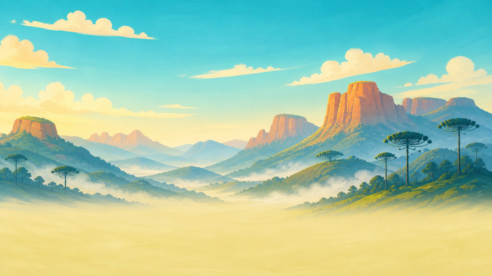

Acelere por serras, cânions, florestas e montanhas nevadas em uma moto preparada para saltos enormes. São cerca de 19 km de pistas, com pedras, pontes, rios, lama, chuva, tempestades e checkpoints.
Roda direto no navegador, sem instalar. O progresso, as moedas, as fases liberadas e os upgrades ficam salvos neste aparelho.
No computador, use ↑/W para acelerar, ↓/S para frear, ←/A e →/D para as manobras e Espaço para pular. No celular, todos os comandos aparecem na tela.
Escreva para arleyadm@gmail.com, informando o aparelho e a fase em que o problema aconteceu.
← Todos os jogos